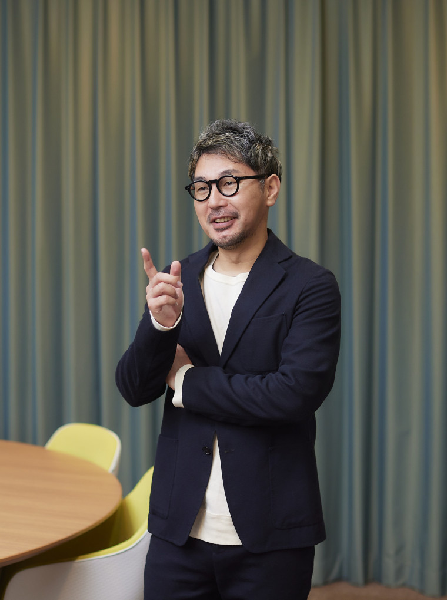

プロスポーツを対象に、リーグとクラブが競技的・経済的・社会的価値の最大化に向けて行う意思決定を経営戦略の観点から分析し、課題解決策の立案に繋げています。現在は、プロ野球球団・海外プロサッカークラブ・国内プロバスケットボールクラブと連携し、実践的な教育研究環境を構築しています。
学生が理論と実践を行き来しながら現場のダイナミクスを体感しつつ、連携先には各種分析データと課題解決策を提供しています。今後はプロスポーツを通じた効果的なスポンサーシップや、市民の幸福最大化に資する行政支援のあり方についても研究を行いたいと考えています。
業界動向と自クラブの実績推移に基づく成長戦略の立案
過去データの分析に基づくチケッティング予想式の開発
ファンの不満の可視化を通じたサービス改善案の作成
他地域の事例調査を通じた効果的な施策の前提条件と具体的取組の組み合わせ提案
プロスポーツ組織へのスポンサーシップ・行政支援の効果最大化
組織が置かれている現状の分析を通じて課題を明らかにすることで、プロスポーツ組織とその支援組織が重点的に投資すべきポイントを明確にすることができます。分析データの解釈や具体策の提案には、学術研究の知見だけでなく、プロスポーツの実務経験を通じて培ったノウハウも融合させます。連携協力先からのお問い合わせを歓迎しています。

共同研究・教育プログラム開発に関するご相談を承っています。